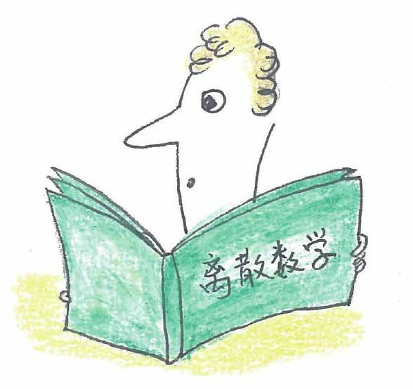
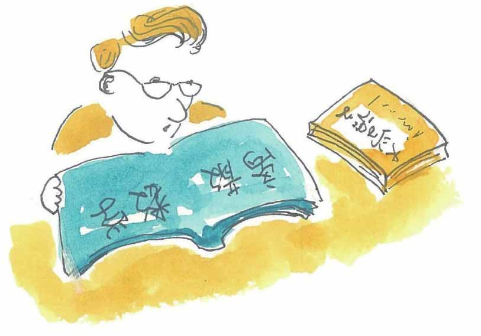
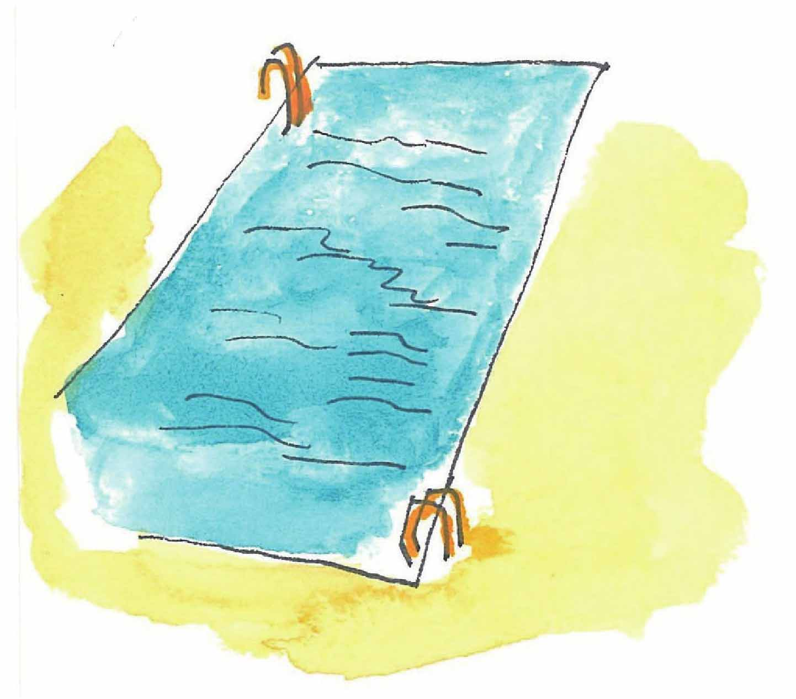
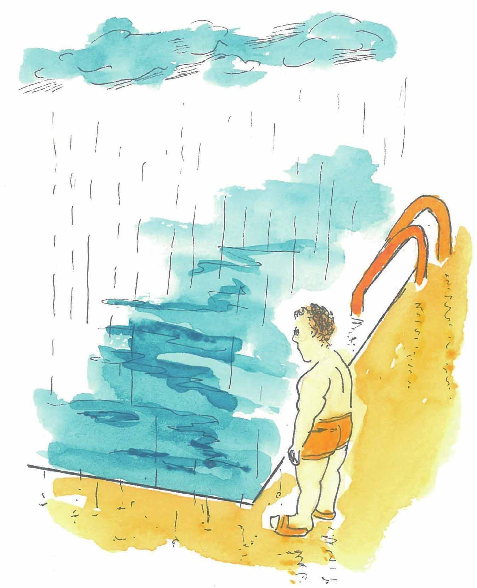

小文，下面这个“推理”过程，它得出结论是1=2。
如果a=b，a>0，b>0，那么1=2。
问题出在哪里？
推理如下：
1）a>0，b>0 已知条件
2）a=b 已知条件
3）ab=bb 2）式同乘以b
4）ab-aa=bb-aa 3）式同减去aa
5）a（b-a）=（b+a）（b-a） 4）式变形
6）a=b+a 5）式同除以b-a
7）a=a+a a=b，b用a代换
8）1=2 7）式同除以a
哈哈，看出来了吗？除了步骤6之外，其他每个推理步骤都是有效的。错误在于（b-a）等于零，一个等式两边用同一个数相除只有在除数不为零时才是有效的。
从前提推导出正确的结论，要求逻辑推理的每一步都应当是正确的，同时，推理的过程中会用到一些推理规则。
在上面的例子中，推理过程主要依据的是等式的性质“等式两边同时加上（或减去）相等的数或式子，两边依然相等”，以及“等式两边同时乘（或除以）相等的非零的数或式子，两边依然相等”。
下面的推理使用了逻辑推理中常用的几个推理规则：
爱丽丝主修离散数学，因此，爱丽丝主修离散数学或大学语文——这里用到了“附加推理（Addition rule）”规则：若A成立，则A或B成立，即A⇒A∨B（符号⇒表示推理成立）。

爱丽丝主修离散数学
因此，爱丽丝主修离散数学或大学语文
汤姆主修大学语文和离散数学，因此，汤姆主修大学语文——这里用到的是“化简推理（Simplification rule）”规则：若A成立且B成立，则A成立，即A∧B⇒A。

汤姆主修大学语文和离散数学
因此，汤姆主修大学语文
游泳池的招牌上写：若天下雨，游泳池将关闭。

若天下雨，游泳池将关闭
今天下雨，因此，游泳池关闭——这里，用到的是“假言推理（Modus ponens）”：若A则B，并且A成立，那么B成立，即（A→B）∧A⇒B。

今天下雨，因此，游泳池关闭
若天下雨，游泳池将关闭。今天游泳池没有关闭，因此，今天没有下雨。
——这里用到的是“拒取式推理（Modus tollens）”规则：若A则B，并且B不成立，那么A不成立，即（A→B）∧～B⇒～A。
今天游泳池没有关闭，因此，今天没有下雨
下面，我们使用上面的推理规则，分析下面这个案件的嫌疑人。
我们已知的信息是：
若张衫或李斯盗窃了密码箱，则午夜大门开；如午夜大门开，则王舞必然醒；王舞那天没醒。
我们可以将上面的信息符号化，这样有助于我们的分析：
P：张衫盗窃了密码箱
Q：李斯盗窃了密码箱
R：午夜大门开
S：王舞醒了
目前已知的三个前提是：
（P∨Q）→R 若张衫或李斯盗窃了密码箱，则午夜大门开
R→S 如午夜大门开，则王舞必然醒
～S 王舞那天没醒
推理的过程可以是这样：
①如午夜大门开，则王舞必然醒， 引入前提：R→S
②王舞那天没醒， 引入前提：～S
③午夜大门没有开， ①②拒取式推理得出：～R
④若张衫或李斯盗窃了密码箱，则午夜大门开，引入前提：（P∨Q）→R
⑤张衫或李斯盗窃了密码箱的假设不成立， ③④拒取式推理得出：～（P∨Q）
⑥张衫和李斯都没有盗窃密码箱。 德·摩根律置换～P∧～Q⇔～（P∨Q）
这样看来，根据已知的信息，张衫和李斯目前不是盗窃密码箱的嫌疑人，警察还得继续找线索。